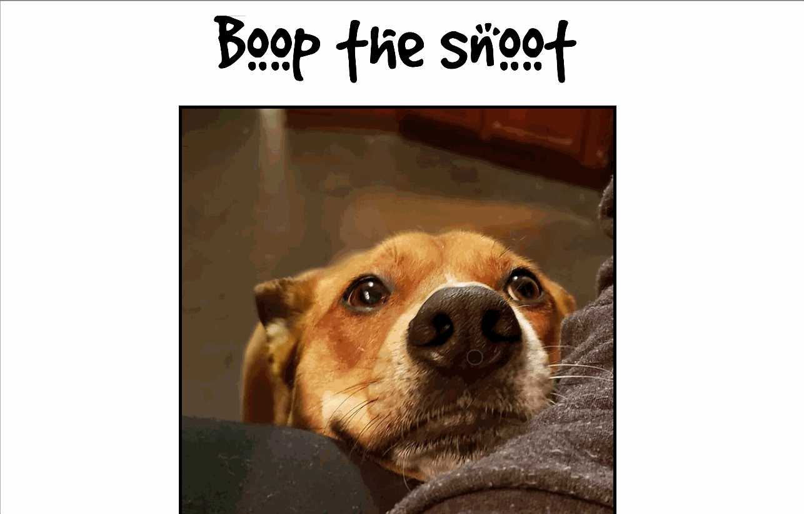
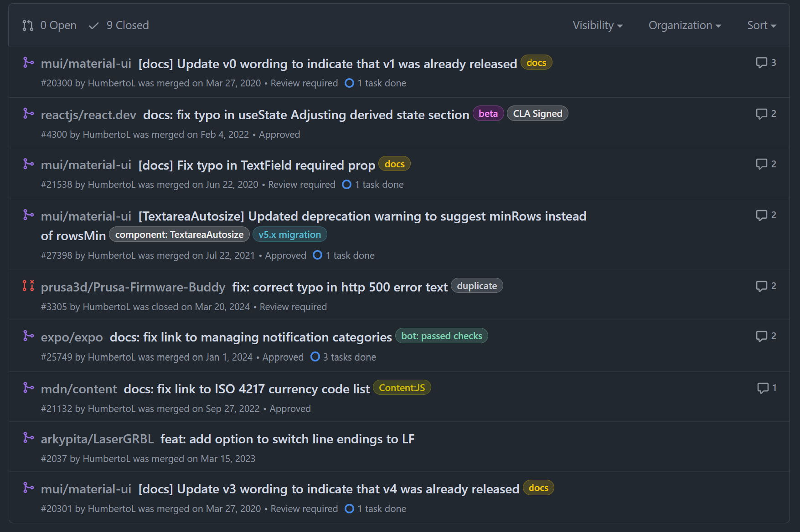

Boop Snoot
React
Firebase
A delightful app that places a "snoot" on any part of the page that you "boop".
Hello, I'm
Full Stack Software Engineer
12+ years of crafting high-quality software — from pixel-perfect UIs to resilient back-end systems. I love turning ideas into products that people actually enjoy using.
I'm a full-stack software engineer with over 12 years of professional experience building everything from interactive web apps to hardware-driven IoT projects. I'm equally comfortable diving into a React component tree, designing a REST API, or soldering an Arduino circuit.
When I'm not shipping code, you'll find me tinkering in my workshop, gaming on Linux, or contributing to open source.

A delightful app that places a "snoot" on any part of the page that you "boop".
Arduino gadget that tracks coffee freshness and updates an LCD.

Contributed to React JS, Material-UI, Expo, MDN Web Docs, and more.

Turns a NeoPixel ring into a clock with playful animations driven by an Arduino.
 LED layout preview
LED layout preview
Editor for 16x96 LED panel animations using a reverse-engineered vendor format.
Internet-controlled treat dispenser built with Blynk so you can reward pups from your phone.

Convert IR remote signals into keyboard events with a Pro Micro or Leonardo so TV remotes can control USB devices.